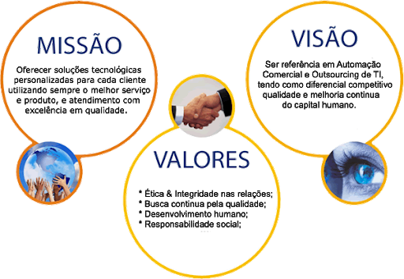

Quem Somos?A Macrosoft é uma empresa moderna, formada por pessoas de espírito jovem, despojadas, que vivem de tecnologia. Gostamos de projetar, de desenvolver, de inovar, oferecendo as soluções e estratégias tecnológicas adequadas. Fazemos isso porque é o que fazemos de melhor. |
Nossa PropostaA Macrosoft vem oferecer aos seus clientes, soluções de negócios, através de ferramentas capazes de alavancar sua empresa. Nossa equipe está apta a desenvolver com rapidez soluções criativas para sistemas, e-commerce, sites e projetos de TI (Sistema Integrado de Gestão Empresarial). Macrosoft - Soluções integradas sob medida às necessidades da sua empresa. |
MissãoFornecer ao mercado produtos e serviços no segmento de tecnologia da informação que efetivamente contribuam para a organização e gestão dos processos de negócio de seus clientes, contribuindo para a redução de custos e aumentando da produtividade e qualidade, através de soluções inovadoras, de equipe comprometida, capacitada e motivada, gerando resultados efetivos para clientes, colaboradores e sócios. |
 |